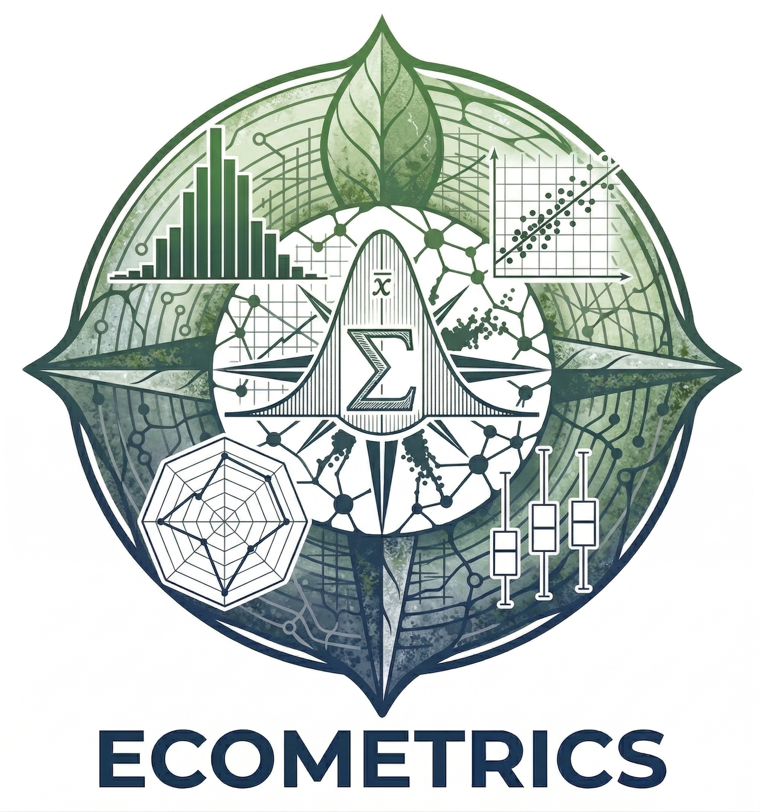

Acerca de ECOMETRICS v1.2
El Cerebro de tus Datos Ambientales
Aviso de Versión Beta
Actualmente te encuentras explorando la versión Beta de ECOMETRICS. Si llegas a experimentar cualquier interrupción o error, te agradeceríamos mucho que nos lo reportes. Además, ¡próximamente lanzaremos un instalador interactivo para Windows!
ECOMETRICS es una herramienta tecnológica de alto nivel diseñada para decodificar la complejidad de los ecosistemas a través de los datos. Desarrollada por el Biól. Erick Elio Chavez Gurrola, esta plataforma facilita el análisis estadístico con rigor científico y precisión matemática.
🧪 Diseño Experimental
Análisis ANOVA (DCA, DBCA, Cuadro Latino) y pruebas no paramétricas (Kruskal-Wallis). Incluye diagnósticos de potencia estadística y agrupamiento de Tukey.
🌲 Biometría Forestal
Cálculo dinámico de biomasa, carbono y volumen comercial. Integración de modelos alométricos y análisis de estructura de rodales con precisión matemática.
🧩 Análisis Multivariado
Ordenación ecológica mediante PCA y NMDS (Bray-Curtis) para identificar afinidad entre sitios y comunidades biológicas bajo rigor científico.
📉 Modelado y Regresión
Ajuste de modelos biométricos y de crecimiento no lineal (Gompertz, Chapman-Richards) para proyecciones de rendimiento forestal de alta fidelidad.
🔍 Correlación de Variables
Matrices de correlación de Pearson con interpretaciones automáticas generadas por un motor de inteligencia artificial con lenguaje natural científico.
💎 Pruebas de Hutcheson
Comparación estadística de diversidad beta e índices de diversidad para determinar diferencias significativas entre comunidades biológicas mediante pruebas t modificadas.
📦 ACCESO Y DESPLIEGUE
Accede a la versión oficial de ECOMETRICS. Utiliza la plataforma interactiva en la nube para análisis inmediatos sin necesidad de instalación.
💡 Nota de Despliegue: Al ser una demostración interactiva gratuita en la nube, la plataforma puede entrar en suspensión tras periodos de inactividad. Si observas la pantalla "Your app is waking up!", solo tomará entre 30 y 45 segundos reactivarse. ¡Agradecemos tu paciencia!
El uso del software es completamente gratuito bajo la licencia MIT.
Citar este Software
Si utilizas ECOMETRICS en tu investigación científica o consultoría técnica, te pedimos que cites la plataforma utilizando el siguiente formato oficial para asegurar el rigor académico y el reconocimiento del software.